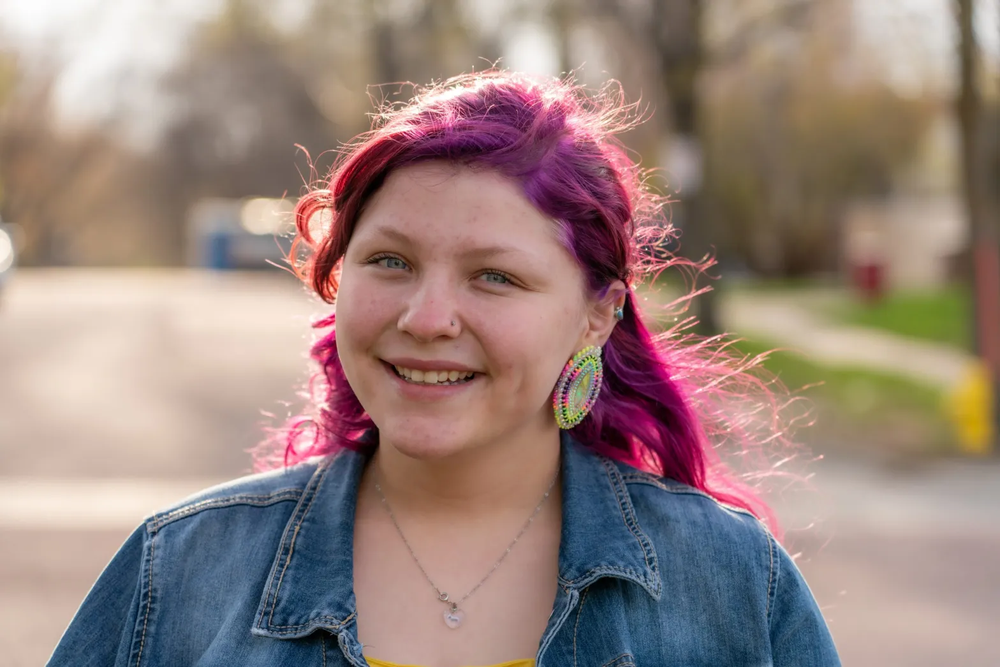
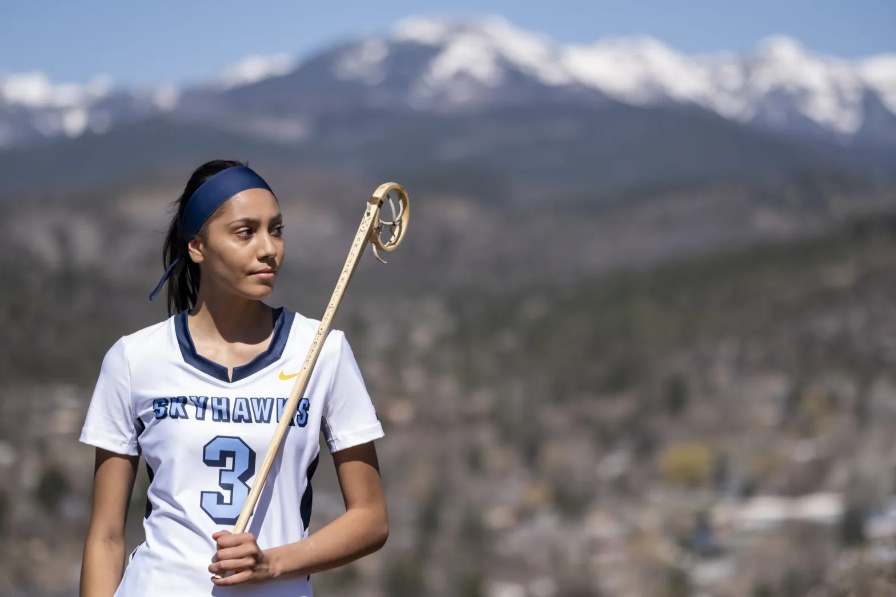
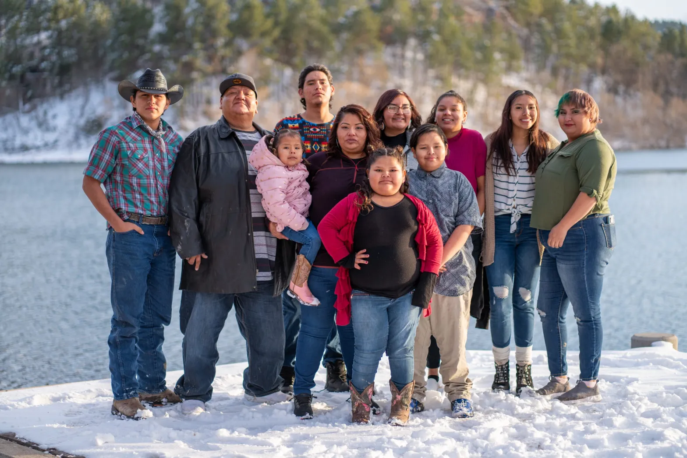
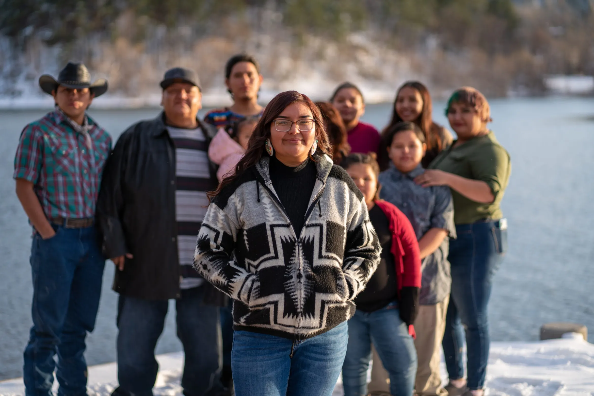

In high school, Cante Skuya Lonehill-Stover, who is Oglala Lakota, decorated her bedroom wall with a photo of her dad waving goodbye to his grandparents from below their porch as he left for college. Two days before she departed for Augustana University — a private liberal arts college in Sioux Falls, on the other side of South Dakota from her home on the Pine Ridge Reservation — Cante re-created the scene as she said goodbye to her own grandparents.
It was one of her last moments with her grandfather, who died at the end of August 2020, just a week after she arrived on campus. Her grandmother discouraged Cante from returning home from college for his funeral. “She knew if I went home, I would stay,” Cante recalled.
At the beginning of August 2020, Nina Polk, who is Diné (Navajo), Sičangu Lakota, San Carlos Apache and Quechan, and her parents piled into their car to make the 20-plus hour drive from their home in Shakopee, Minnesota, to Durango, Colorado, where Nina had been recruited to play women’s lacrosse at Fort Lewis College. Her mom was hesitant to let her go, but the pandemic had sabotaged the end of Nina’s high school lacrosse career and she didn’t want to lose another season.
In early November, Nina’s lacrosse coach called an urgent team meeting. An on-campus party had been the source of a coronavirus outbreak. The team, gathered on the field, fell silent as their coach told them practice was suspended for the rest of the fall. Suddenly, Nina’s reason for being on campus was thrown into question, and she grew more despondent after the college announced all instruction would be remote until Christmas break.
Last September, Tayah Running Hawk, who is Oglala Lakota, gathered at a social distance with 16 other classmates in a modified ballroom at St. Catherine University, an all-women’s college in St. Paul, Minnesota, during her first-year orientation. “What fears and anxieties do you have right now?” her professor asked.
I couldn’t bring myself to talk about the fear that I have of not belonging here at the university"
-Tayah Running Hawk, Oglala Lakota, student at St. Catherine University
One student shared that she was homesick. Others talked about feeling isolated and fearing the coronavirus. Tayah, who, like Cante, grew up on the Pine Ridge Reservation, didn’t say anything. I couldn’t bring myself to talk about the fear that I have of not belonging here at the university," she said.
Simply by getting to college, these three Native American women stood out from many of their peers. Just 24 percent of 18- to 24-year-old American Indian and Alaska Native students were enrolled in college in 2019, the lowest of any group, according to the National Center for Education Statistics. Native American students are also more likely to drop out of college during or after their freshman year and second most likely, after Black students, to transfer to a different institution.
Then the pandemic hit, throwing up additional obstacles on the high school-to-college path. Last fall, the share of Native American students enrolled in college for the first time plummeted by almost a quarter, more than for any other racial or ethnic group, according to the National Student Clearinghouse Research Center.
The barriers that can derail Native American students in their pursuit of a college degree are numerous. These students are more likely to face financial difficulties than their white peers: During the pandemic, for example, three-quarters of students identifying as Indigenous reported experiencing insecurity in basic needs such as housing and food, compared with 54 percent of white students, according to a March 2021 study from the Hope Center for College, Community and Justice.
Native students are also more likely to face racism and microaggressions than white students, and there’s often a disconnect between their cultural identities and Western higher education institutions, according to Native American higher education experts. In part because they make up less than 1 percent of all undergraduates, Native American students often have trouble finding professors, peers and mentors who understand them and can help them create a sense of community on campus.

The pandemic made finding those connections even more difficult, said Megan Red Shirt-Shaw, the director of Native student services at the University of South Dakota, who is Oglala Lakota. Students also felt pulled home due to the loss of family and community members, she said. Indigenous students were twice as likely as white students to know someone who died of the coronavirus.
“Feeling responsibility towards your studies is deeply difficult if you have things that are extremely traumatic that are happening and you feel a call to that responsibility, too,” said Red Shirt-Shaw. “This generation of first-year students just went through something that is so deeply different than generations past.”
The Hechinger Report followed Cante, Nina and Tayah, all 19 now, through their freshman year to explore the pandemic’s toll on Native American young people and what it takes to get through college on campuses that, even in normal times, are not always set up to serve Indigenous students. While their experiences were highly individual, some common themes emerged.
Cante
When Cante arrived at Augustana University in fall 2020, she was one of just 11 undergraduates who identified as American Indian or Alaska Native, out of 1,662 at the school.
She’d been drawn to what she described as the college’s stated commitment to cultural diversity and inclusion, but she didn’t see that reflected in the student body, which is 83 percent white. “It was a huge culture shock coming from … a close, tight-knit community, to a place where people aren’t as accepting,” she said.
Jill Wilson, a college spokesperson, wrote in an email that Augustana is committed to recruiting and admitting more students from underrepresented groups, including by “establishing deep relationships with tribal colleges, universities and other networks to recruit more Native American students.” She also said the school runs a program to help first-year students of color navigate campus life (which Cante said she didn’t know about).
When Cante donned her purple ribbon skirt, a traditional garment worn by some Native women, to commemorate Indigenous Peoples Day in October, another student approached her. Not realizing Cante was Native, the student accused her of cultural appropriation. “She’s like, ‘You’re white, you shouldn’t be wearing that,’ ” Cante recalled.
Cante just walked away. “Most of my life, I have gotten that I’m too white to be Native, or I don’t look Native,” she said. “My family has told me I need to turn a blind eye to that stuff. Because being Native is not what’s on the outside.”
Cante began to spend most of her time with her roommate, a Yankton Sioux student she’d met during the 7th Gen Summer Program, a college readiness program targeting Native American students. They took college classes through the University of South Dakota and completed an internship at the Crazy Horse Memorial.
A spike in coronavirus case counts on campus deepened their isolation as they tried to concentrate on their studies and stay healthy. After final exams in December, her roommate went home, with plans to transfer to another college, but Cante stayed on campus for her job at Runnings, a home, farm and outdoor store where she works 24 hours a week. She nearly spent her 19th birthday in December alone, until her dad showed up on campus for a surprise visit.
The few days she did spend home at Christmas made her realize how much she was struggling to fit in. “I really adapted just to adjust to this school,” she said.
Back on campus for the spring semester, Cante spent most of her time hunkered down in her dorm room, focusing on keeping her grades up, or at her job. “I’ve just been kind of riding it solo,” she said. “And just keeping to myself.”
In late February, Cante began working on her transfer application to South Dakota State University for fall 2021.
Nina
Fort Lewis College is situated on a mesa overlooking downtown Durango, a small city of 19,000 in the mountains of southwestern Colorado. The college is a decommissioned military base that became a Native American boarding school in the late 19th century. In 1911, the school was turned over to the state of Colorado on condition that Native American students wouldn’t pay tuition. Today, 46 percent of the college’s students are Native American.
In addition to the tuition waiver, Fort Lewis offered everything Nina was looking for in a campus: Division II lacrosse, a strong fine arts program and gorgeous natural surroundings. “Fort Lewis was kind of like my dream school,” Nina said.
I don't feel alone"
- Nina Polk, a student at Fort Lewis College in Durango, Colorado, talks about her experience at the college, where 46% of its students are Native American.
Surrounded by other Native students, and as a member of her lacrosse team, Nina felt comfortable on campus. She’d moved a lot as a kid, living in several states before her family settled in Minnesota when she was 8. Her middle school was racially diverse, but Native American students were few, and her high school was predominantly white. At Fort Lewis, she said, “I don’t feel alone.”
Fort Lewis officials say that sense of community is intentional. The college runs programs such as Native Skyway to Success, a preorientation for incoming first-year and transfer students that allows them to connect with other Native students and staff at the college’s Native American Center.
In fall 2020 the college was able to buck national enrollment trends, increasing the number of first-year Native students by 11 percent, which was more than for all first-year students. It also boosted the retention rate — the share of students who continue from freshman to sophomore year — for Native students more than for the general student population, said Lauren Savage, a spokesperson for the college.
Still, having a lot of Native students on campus doesn’t eliminate prejudice, Nina said. At Fort Lewis, she overheard students complaining that Native students don’t deserve to “get in for free,” she said. It’s the kind of derogatory comment about Native people she’s heard her whole life, she said.
In middle school, Nina had almost abandoned athletics after some of her basketball teammates bullied her for her culture and physique, despite its advantages for the sport — she was tall and skinny. At 6 feet, 1 inch, she still stands a head taller than many of her teammates.
It wasn’t until she picked up a traditional lacrosse stick in seventh grade through the Twin Cities Native Lacrosse league that Nina finally found her sport. She first played modern lacrosse when she tried out for her high school team as a ninth grader. Lacrosse quickly became a driving force as she started to look at colleges.
At Fort Lewis, before campus shut down, she’d enjoyed the classes held in person. “I was just grateful to be on campus and get that … first experience of college,” she said. But with her online classes, she struggled to stay motivated. Then, during the coronavirus outbreak that eventually closed the campus, she made the decision to return home to Minnesota and finish out the semester there.
While Nina was disappointed to miss fall lacrosse training, being home was in many ways a relief from the stress of campus life during the pandemic. It also gave her an opportunity to spend precious time with her family, including her parents, three grandparents and her little sister, Tusweča, which means “dragonfly” in Lakota.
At 19, Nina is more than a decade older than Tusweča. Her parents were around her age when they met at Haskell Indian Nations University, a boarding school turned tribal college in Lawrence, Kansas. She said she got her love of art from her mom, a mixed media artist, and her athletic ability from her dad, a professional disc golf player. Her parents always expected her to go to college, she said, and now she sees herself as a role model for her little sister.
In January, when campus reopened, Nina returned to Colorado and joined her fellow Skyhawks on the lacrosse field. Although the spring season was disrupted by frequent coronavirus testing, shin splints and canceled games, Nina was happy to spend many weekends on the road, doing homework on long bus rides and in hotel rooms in places such as Colorado Springs and Denver.
Nina shared her culture with her teammates, too, by teaching them about the history of the game. Some of them even knew her through TikTok before they’d met her in person. Before coming to college, Nina had begun to record and share TikTok videos on the differences between modern and traditional lacrosse, which drew tens of thousands of views.
In the videos and to her teammates, she explained how tribes such as the Haudenosaunee (Iroquois) and Ojibwe played traditional lacrosse before it was appropriated by European settlers, who adapted it to create modern lacrosse. She learned the Great Lakes version, called thakápsičapi or baaga’adowewin, played by the Dakota and Ojibwe tribes.
“We call it the Creator’s Game or the medicine game, because we believe it was gifted to us by the Creator,” Nina said. “It was a healing game because it connected us to the land, to animals, to water.”
Tayah
Not long after arriving on the campus of St. Catherine (referred to by the college community as St. Kate’s), Tayah logged into the virtual office hours organized by the office for multicultural and international programs and services. The office, designed to gather and provide support to students of color, had created a “virtual couch” via Zoom that students could drop into remotely.
Tayah immediately felt at ease. “I really liked the whole vibe of it,” she said in September 2020. “It’s just like a really nice sense of community. In the midst of all of this, it was really nice to feel that.”
At the college, about 42 percent of students identify as Black, Indigenous and people of color. Still, Tayah said she met only one other Native American student.
In October, emboldened by support from the students and staff she’d met, Tayah booked an appointment with the office of residence life to advocate for Native American students to “smudge” in the residence halls. Smudging is a spiritual and cultural practice of burning herbs such as sage, cedar and sweet grass.
Sitting before the office’s director, Tayah explained that she and other Native students might smudge to start their day or to cleanse their energy. She described the abalone shell bowl she uses to burn the herbs, which are rolled into a small ball and lit, and tried to allay the director’s concerns that smudging might pose a fire hazard.
Tayah said it was important to educate the campus about smudging and advocate for Native American students’ right to practice their cultural ceremonies, and she hoped to make a difference for other Native students who might attend St. Kate’s in the future.
While she felt listened to, the conversation didn’t result in a concrete policy change. Amanda Perrin, director of residence life at St. Catherine, said that because dorms are communal living spaces, there is a high standard for fire safety. Students who would like to smudge on campus can talk with staff about an exemption for the dorms or getting access to other spaces to do so, Perrin said.
Meanwhile, despite finding some support from staff and peers on campus, Tayah struggled with the isolation of studying remotely from her dorm room. The majority of her classes were online, so her interactions with classmates were limited. She looked forward to Mondays, when her only in-person class, a first-year seminar, was held.
She also struggled with being a 10-hour drive from home. In October 2020, South Dakota had one of the highest per capita coronavirus infection and death rates in the United States. “With Covid … on the rise on my rez, the numbers keep climbing — I’m just really worried about my family,” she said in an interview that month.
During the fall, she lost several extended family members to the coronavirus. Being unable to travel home for the funeral services increased her anxiety. Distracted by worries, Tayah fell behind in her classes. She didn’t ask for help, she said, because she didn’t want to discuss details about her family with her professors.
She began to grapple with whether to stay at St. Kate’s. “I kept going back and forth,” she said.
In early November, Tayah’s mother called to let her know that her grandmother was sick due to underlying health issues. Tayah decided she wanted to withdraw and return home. Her mom tried to discourage her. But a few days later, on Nov. 12, she withdrew from classes, packed up her dorm room and drove back to South Dakota.
In January, Tayah tried to start her second semester at St. Kate’s remotely from South Dakota. But she struggled to get online from home. Her family also turned to her to care for her 1-year-old nephew, Junior. Within a few weeks of starting the semester, she dropped all her classes again.
That would give her space to think about what she wanted to do in fall 2021, she reasoned. “I really just want to focus all my energy and efforts, everything, towards next school year,” she said in February.
A sophomore year?
Family often plays a big role in shaping Native American students’ college paths, said Cheryl Crazy Bull, president of the American Indian College Fund, who is Sičangu Lakota. Many students want to get an education, then return home to give back to their families and communities, but that same desire to help can keep them out of college altogether.
“There’s a lot of worry about whether or not their family is going to have sufficient resources to first, navigate the pandemic, and now, navigate the aftermath of that,” Crazy Bull said. “We still have a lot of economic fallout in our tribal communities.”
That economic fallout could depress college enrollment rates among Native American students even further. So, too, could the mental health toll of the pandemic: A February 2021 study from the Center for Collegiate Mental Health found that American Indian and Alaska Native students reported the highest rates of grief and loss of any group. They were also the most likely to withdraw or take a leave of absence from college due to the pandemic, according to the National Center for Education Statistics.
Native American women, though, were less affected than their male peers. In higher education overall, women earn the majority of four-year degrees. That’s true for Native American students, too: Sixty percent of American Indian and Alaska Native undergraduates in fall 2016 were female, for example. During the pandemic, those gaps increased even more: Native American men saw the steepest enrollment declines of any group in fall 2020.
Back on the Augustana campus in the spring, Cante’s grades improved. She learned how to better manage her time and found ways to unwind. On Tuesdays, she took a break from her job at the store to play intramural volleyball. That was her day to do something for herself, she said.
She also felt determined to finish college. The picture she’d re-created of her dad leaving for college represented something unfinished. He had dropped out of Dakota Wesleyan University, in Mitchell, South Dakota, after a few semesters.
But even as some things improved at Augustana, Cante became increasingly sure that her decision to transfer to South Dakota State was the right one. “I don’t think the pandemic had anything to do with the challenges I faced in the past year,” Cante said.
She’d never found the friend group she was looking for and got to know only a few faculty members. Most of the professors, she said, “weren’t very understanding about me being 500 miles away from home, being in a completely culturally different environment.”
“I tried to explain all this to them and that I had a really hard year, and they just kind of brushed it off,” she added. “They’re like, ‘Well, you’re a college student. Everybody goes through it. You got to just deal with it.’ ”
I have come really far from where I was when I was at Augustana"
- Cante Skuya Lonehill-Stover, a former student at Augustana, is now pursuing veterinary medicine at South Dakota State University.
In late August, Cante started at South Dakota State University in Brookings, where she’s studying veterinary medicine. She hopes to eventually open her own veterinary practice. “I have come really far from where I was when I was at Augustana,” she said.
After successfully finishing the spring semester at Fort Lewis, Nina returned to Minnesota for the summer. She picked up her traditional Great Lakes stick again and was invited to speak about the history of Native lacrosse at several professional lacrosse events.
Being an ambassador for traditional lacrosse prompted her to reflect on what she wanted to do with her life. She’d always been motivated by art, spending hours at a time in her mom’s studio as a child. But she struggled in her art classes during the pandemic.
Lacrosse, on the other hand, had become Nina’s lifeline. “That’s what kept me motivated, the game itself,” she said.
Then, in August, a knee injury prompted her to take the fall semester off to stay home and heal. She also wanted to give herself space to figure out her future career plans.
When she returns to Fort Lewis in the spring, Nina said she intends to switch her major from studio art to Native American and Indigenous studies “to learn more about my culture, my people” and find new ways to advocate for the sport she loves.
This fall, Tayah started over, pursuing an associate degree in business at Little Priest Tribal College in Winnebago, Nebraska. She is studying remotely from her home in South Dakota. Tribal colleges, which are operated by tribes, tend to provide more culturally responsive education for Native American students, although the schools often struggle with graduation rates. Around 10 percent of all Native American students attend one of the 35 accredited tribal colleges and universities in the U.S.
Tayah doesn’t regret her time at St. Kate’s. “I think that a non-Covid St. Kate’s would be a fit for me,” she said. “It’s just so many things were limited and restricted and totally just knocked off because of Covid. And so that really, really changed my experience there.”
Using federal pandemic emergency relief funds, Little Priest is providing four free classes to students this fall as well as a laptop for new students. Tayah said she worries about balancing her caregiving for her nephew, Junior, with her studies. But she has found a quiet place to study at her grandfather’s house.
She eventually wants to pursue a career in social work or public health, she said. “I know that I don’t just want to hold one degree to my name, I want many degrees,” Tayah said. “That’s also knowledge that can help people out there, especially in our [tribal] communities.
“So something that just always keeps me going is that I think about the bigger picture and the hard times, and it reminds me that I am strong.”